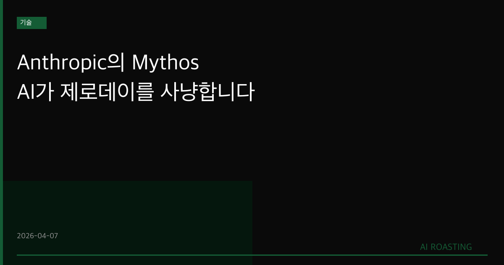

Anthropic이 공개 배포를 보류한 Claude Mythos Preview가 보안 전문가와 자동화 도구가 수십 년간 놓쳤던 취약점을 단독 발굴했습니다.
Anthropic은 Apple, Amazon, Microsoft, Google 등 40개 이상 기업과 Project Glasswing 컨소시엄을 구성했습니다. 1억 달러 상당의 크레딧을 투입해 핵심 인프라 방어에 활용합니다.
코딩에 뛰어난 AI는 코드의 결함도 찾아냅니다. 이 구조적 연결이 사이버보안 업계의 공수(攻守) 균형을 바꾸고 있습니다.
보안 전문가가 27년간 못 찾은 버그를 AI가 혼자 찾았습니다.
당신 회사 시스템도 지금 이 순간 같은 상황일 수 있습니다.
OpenBSD는 "해킹하기 어렵게 설계된" 운영체제입니다. 수많은 인터넷 라우터와 방화벽의 기반이 됩니다. 그 안에 27년간 아무도 몰랐던 버그가 있었습니다.
Claude Mythos Preview가 그걸 찾았습니다. 보안 전문가도 아니고, 500만 번 스캔한 자동화 도구도 아닙니다. Anthropic의 AI 모델 하나가 혼자 발굴했습니다.
당신 회사 서버에도 비슷한 나이의 코드가 있을 수 있습니다. Anthropic은 이 모델을 일반에 공개하지 않겠다고 했습니다. 대신 40개 이상의 빅테크와 인프라 기업에게만 접근을 허용합니다. 경영 리더라면 이 선택이 무엇을 의미하는지 알아야 합니다.
Anthropic의 연간 매출은 2026년 300억 달러를 넘었습니다(출처: Anthropic 발표, 2026년 4월). 2025년 90억 달러 대비 3배 이상입니다. 성장의 핵심 동인은 코딩 능력입니다. 그런데 코드를 잘 짜는 AI는 코드의 약점도 잘 찾습니다. 이 두 가지는 같은 능력의 양면입니다.
CrowdStrike CTO Elia Zaitsev는 이렇게 말했습니다. "몇 달 걸리던 일이 AI로 몇 분이면 됩니다." 공격자가 이 능력을 먼저 손에 넣으면, 방어자가 뒤따라가는 구조가 됩니다. Project Glasswing은 방어자가 먼저 움직이기 위한 시도입니다.
이번 발표의 핵심은 모델 성능이 아닙니다. 구조의 변화입니다. 세 가지로 정리합니다.
첫째, AI 역량의 상한선이 보안 수준의 하한선이 됩니다. Claude Mythos Preview는 특별한 보안 훈련을 받지 않았습니다. 단지 전반적 능력이 향상되었을 뿐입니다. Anthropic 수석 과학자 Kaplan은 "유사한 보안 능력이 곧 다른 모델에도 생길 것"이라 밝혔습니다. 즉, 이 능력은 특정 회사의 전유물이 아닙니다. AI 모델이 발전할수록 모든 소프트웨어의 취약점 노출 위험도 함께 커집니다.
둘째, "복잡해서 안전하다"는 논리가 무너집니다. 기존 보안 패러다임의 전제 중 하나는 "공격에 충분한 인력과 시간이 필요하다"는 것이었습니다. 라우터 펌웨어나 레거시 시스템이 수십 년간 문제없이 운용된 것도 이 가정 위에서입니다. Claude Mythos Preview는 500만 번 자동화 스캔이 놓친 버그를 찾아냈습니다. 복잡성이 방어막이 되지 않는 시대가 시작되었습니다.
셋째, Project Glasswing은 공개 표준 경쟁의 출발점입니다. Apple, Amazon, Microsoft, Google이 한 테이블에 앉았습니다. Cisco, Broadcom, Linux Foundation까지 포함한 구성은 이례적입니다. 경쟁사를 아우른 이 구조는 단순한 방어 협력이 아닙니다. AI 보안의 산업 표준을 누가 주도하느냐를 두고 벌이는 경쟁입니다.
IT 담당자에게 "5년 이상 된 코드베이스가 어디에, 얼마나 있는가"를 물어보세요. Claude Mythos가 찾은 27년 된 버그처럼, 오래된 코드일수록 취약점 노출 위험이 높습니다. 파악에 1시간, 목록화에 하루면 충분합니다.
연 1회 외부 취약점 점검만 의존하고 있다면, 그 사이 기간이 무방비 상태입니다. 담당자에게 "지속적 자동 스캔 도구를 쓰고 있는가"를 확인하세요. Snyk, Semgrep 같은 도구는 코드 변경 때마다 실시간 스캔합니다. 도입 결정까지 1주일이면 됩니다.
자사 개발 코드보다 외부 오픈소스 라이브러리에서 취약점이 더 자주 발생합니다. OpenBSD처럼 "안전하다고 알려진" 오픈소스도 예외가 아닙니다. SBOM(소프트웨어 자재 명세서)은 회사가 사용하는 오픈소스 라이브러리 전체 목록입니다. 작성 여부를 확인하고, 없다면 도입을 검토할 시점입니다.
Anthropic의 발표를 그대로 받아들이기 전에 세 가지를 고려해야 합니다.
우선, 미공개 모델의 역량 주장은 독립 검증이 어렵습니다. 참여 기업들은 모델에 접근하고 있습니다. 하지만 외부 보안 연구자들의 공개 재현 사례는 아직 없습니다. CrowdStrike CTO의 발언은 긍정적이나, 고객사 입장이기도 합니다.
다음으로, 방어 도구는 공격 도구이기도 합니다. 취약점을 찾는 AI는, 그 취약점을 악용하는 데도 쓰일 수 있습니다. Anthropic이 공개 배포를 보류한 이유입니다. 하지만 동일한 역량이 "곧 다른 모델에도 생긴다"는 것이 Kaplan의 예측입니다. 비공개 전략이 얼마나 오래 유효할지는 미지수입니다.
마지막으로, Project Glasswing에 접근하지 못한 기업이 더 많습니다. 40개 파트너 외의 기업은 같은 도구를 방어에 쓸 수 없습니다. 기술 접근성 격차가 보안 격차로 직결되는 구조입니다.
코딩을 잘하는 AI는 버그도 잘 찾습니다. 그 능력이 누구 손에 먼저 들어가느냐가 기업 보안의 새로운 변수입니다.
- Roose, K. (2026, April 7). Anthropic Claims Its New A.I. Model, Mythos, Is a Cybersecurity 'Reckoning' [Article]. The New York Times. https://www.nytimes.com/2026/04/07/technology/anthropic-ai-claude-mythos-cybersecurity.html